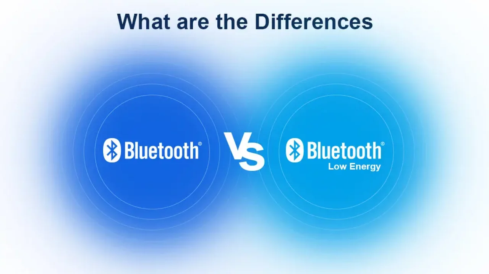

Wireless Communication & Cloud Computing Lab
Our Research
-
P4 交換器
P4 交換器是一種可程式化的網路交換器，透過 P4 語言使用者可以自訂封包的解析、處理與轉發邏輯，使網路設備能靈活支援新協議或特殊應用，而不需更換硬體。
-
低功耗藍牙 (Bluetooth Low Energy, BLE)
BLE（Bluetooth Low Energy，低功耗藍牙）是藍牙 4.0 引入的一種無線通訊技術，專為低功耗、低成本與短距離應用設計，具有快速連線、低延遲與省電的特點，常見於智慧手環、醫療感測器、智慧家居與物聯網裝置，是現今 IoT 生態系中重要的無線連接技術之一。
 -
WiFi 7 802.11be
WiFi 802.11be（也稱 Wi-Fi 7）是最新一代的無線網路標準，支援高達 46 Gbps 的極高速率、低延遲與多通道聚合，並引入 多連接（Multi-Link Operation, MLO） 技術，提升多裝置環境下的穩定性與效能，非常適合 4K/8K 影音串流、雲端遊戲與高密度 IoT 應用。
Lab Members
Professor
Hsueh-Wen Tseng
Professor
Office：理 908
Tel：(04) 2284-0497 ext 908
Email：hwtseng@cs.nchu.edu.tw
Education：Ph.D. (CSIE), National Taiwan University
Wireless Networks
Communication Protocol Design
Networked Apps & Services
Cloud Computing & Networking
Experience
- CCMA, ITRI（新竹）— Engineer
- Cameo Co., Ltd.（台北）— Software Engineer & Project Management
Publications
Articles and Book Chapters
- • Hung-Wen Liu, Mandavi Dubey, and Hsueh-Wen Tseng*, “LAEBLE: A Lightweight Authentication and Encryption Mechanism for the E-Health System in Bluetooth Low Energy,” IEEE Sensors Journal, vol. 23, pp. 26712-26727, August 2023.
- • Ting-Ting Yang, Hsueh-Wen Tseng*, and Chia-Chen Lu, “An Early Wake-up and Access Barring Scheme for Improving the Probability of NDP in BLE Networks,” IEEE Transactions on Green Communications and Networking, vol. 7, pp. 724-743, June 2023.
- • Ting-Ting Yang, and Hsueh-Wen Tseng*, “A Service-aware Scheme for Improving Channel Selectivity of BLE Beacon Advertising,” IEEE Transactions on Green Communications and Networking, vol. 7, pp. 234-247, March 2023.
- • Ting-Ting Yang and Hsueh-Wen Tseng*, “Improving Discovery Process Toward User Engagement Based on Advertising Extensions in Bluetooth Low Energy Networks,” IEEE Transactions on Mobile Computing, vol. 21, no. 9, pp. 3176-3192, Sept. 2022.
- • Hsueh-Wen Tseng, Hao Kao, and Chin-Fu Kuo, “Adaptive Advertising Interval for Electronic Shelf Label System Based on Bluetooth Low Energy,” IEEE Sensors Journal, vol. 22, pp. 12369-12385, May 2022.
- • Hsueh-Wen Tseng, Yu-Bin Wang, and Yi Yang, “An Adaptive Channel Hopping and Dynamic Superframe Selection Scheme with QoS Considerations for Emergency Traffic Transmission in IEEE 802.15.6-Based Wireless Body Area Networks,” IEEE Sensors Journal, vol. 20, pp. 3914-3929, April 2020.
- • Hsueh-Wen Tseng, Ruei-Yu Wu, and Ching-Wen Lo, “A Stable Clustering Algorithm Using The Traffic Regularity of Buses in Urban VANET Scenarios,” Wireless Networks, vol.26, pp. 2665-2679, May 2020. (SCI/EI)
- • Hsueh-Wen Tseng*, Ting-Ting Yang, Wan-Chi Chang, and Yu-Xiang Lan, “An Efficient Error Prevention and Recovery for Multicast Traffic Scheme in Data Center Networks,” Journal of Network and Computer Applications, vol. 114, pp. 38-47, July 2018. (SCI/EI)
- • Hsueh-Wen Tseng*, Ting-Ting Yang, Kai-Cheng Yang, and Pei-Shan Chen, "An Energy Efficient VM Management Scheme with Power-Law Characteristic in Video Streaming Data Centers," IEEE Transactions on Parallel and Distributed Systems, vol. 29, pp. 297-311, Feb. 2018. (SCI/EI)
- • Hsueh-Wen Tseng, Wan-Chi Chang, I-Hsuan Peng, and Pei-Shan Chen, “A Cross-Layer Flow Schedule with Dynamical Grouping for Mitigating TCP Incast in Data Center Networks,” ACM SIGAPP Applied Computing Review, vol. 17, pp. 15-25, March 2017.
- • Hsueh-Wen Tseng, Ruei-Yu Wu, and Yi-Zhang Wu, “An Efficient Cross-Layer Reliable Retransmission Scheme for the Human Body Shadowing in IEEE 802.15.6-Based Wireless Body Area Networks,” IEEE Sensors Journal, vol. 16, pp. 3282-3292, May 2016. (SCI/EI)
- • Ching-Chih Chuang, Ya-Ju Yu, Ai-Chun Pang, Hsueh-Wen Tseng, and Hsin-Peng Lin, “Efficient Multicast Delivery for Data Redundancy Minimization over Wireless Data Centers,” IEEE Transactions on Emerging Topics in Computing, vol. 4, pp. 225-241, April-June 2016. (SCI/EI)
- • Yao-Chung Fan and Hsueh-Wen Tseng*, “Effective Schemes for Place Name Annotations with Mobile Crowd,” accepted and appear in Mobile Information Systems, (SCI/EI)
- • Hsueh-Wen Tseng*, Yao-Chung Fan, Shiann-Tsong Sheu, and Shaiu-Yi Ou, “An Effective Grouping Scheme for Avoiding Hidden Node Problem in IEEE 802.15.4-Based Wireless Sensor Networks,” ACM SIGAPP Applied Computing Review, vol. 14, pp. 30-40, March 2014.
- • Yue-Ru Chuang, Hsueh-Wen Tseng*, and Shiann-Tsong Sheu, “An Efficient Discrete-Error-Checking Scheme (DECS) for IEEE 802.16-based Multi-hop Networks,” IEEE Transaction on Computers, vol. 62, pp. 2354-2365, Dec. 2013. (SCI/EI)
- • Chin-Fu Kuo, Hsueh-Wen Tseng, and Ai-Chun Pang, “A Fragment-Based Retransmission Scheme with QoS Considerations for Wireless Networks,” Wireless Communications and Mobile Computing, vol.13, pp.1450-1463, Nov. 2013. (SCI/EI)
- • Hsueh-Wen Tseng and Yue-Ru Chuang, “A Cross-Layer Judgment Scheme for Solving Retransmission Problem in IEEE 802.15.4 Wireless Sensor Networks,” IEEE Sensors Journal, vol. 13, pp. 3124-3135, August 2013. (SCI/EI)
- • Hsueh-Wen Tseng, Shiann-Tsong Sheu, and Yun-Yen Shih, “Rotational Listening Strategy (RLS) for IEEE 802.15.4 Wireless Body Networks,” IEEE Sensors Journal, vol. 11, pp. 1841-1855, September 2011. (SCI/EI)
- • Hsueh-Wen Tseng, Shan-Chi Yang, Ping-Cheng Yeh, and Ai-Chun Pang, “A Cross-Layer Mechanism for Solving Hidden Device Problem in IEEE 802.15.4 Wireless Sensor Networks,” IEEE Sensors Journal, vol. 11, pp. 493-504, February 2011. (SCI/EI)
- • Hsueh-Wen Tseng, Ai-Chun Pang, Jenhui Chen, and Chin-Fu Kuo, “An Adaptive Contention Control Strategy for IEEE 802.15.4-based Wireless Sensor Networks,” IEEE Transactions on Vehicular Technology, vol. 58, pp. 5164-5173, November 2009. (SCI/EI)
- • Shiann-Tsong Sheu, Yue-Ru Chuang and Hsueh-Wen Tseng*, “An M-time Inheriting Transmission Strategy for Interactive Multimedia Applications Wireless Networks,” Computer Communications, vol. 30, pp. 1187-1198, March 2007. (SCI/EI)
- • Hsueh-Wen Tseng, Ai-Chun Pang, Chin-Fu Kuo and Shiann-Tsong Sheu, “Efficient and Fast Retransmission for Wireless Networks,” Computer Communications, vol. 29, pp. 2964-2974, September 2006. (SCI/EI)
- • Jenhui Chen, Ai-Chun Pang, Shiann-Tsong Sheu, and Hsueh-Wen Tseng*, “High Performance Wireless Switch Protocol for IEEE 802.11 Wireless Networks,” ACM/Springer Mobile Networks and Applications (MONET), vol.10, no. 5, pp. 741-751, October 2005. Special Issue on WLAN Optimization at the MAC and Network Levels. (SCI/EI)
- • Bih-Hwang Lee and Hsueh-Wen Tseng, “A Safe Multiple Access-Rates Transmission (SMART) Scheme for IEEE 802.11 Wireless Networks,” IEICE Transaction on Communications, vol. E87-B, no.1, pp.75-84, January 2004. (SCI/EI)
- • Shiann-Tsong Sheu, Bih-Hwang Lee, Hsueh-Wen Tseng, Chiu-Yun Ko, and Wei-Zhen Liang, “A Balanced Scheduling Algorithm for High-Speed ATM Switch,” Lecture Notes in Computer Science (LNCS), vol. 2343, pp. 268-277, Springer-Verlag, September 2002. (SCI/EI)
International Conference
- • Hsueh-Wen Tseng, Ting-Ting Yang, and Yi Yang, “An Adaptive Transmission Strategy for Tiled 360-Degree VR Videos in NOMA System,” Proc. ACM SAC 2024, Avila, Spain, pp.1765-1773, April 2024.
- • Hsueh-Wen Tseng, Ting-Ting Yang, and Bing-Han Tsai, “Priority-based Resource Reservation Mechanism for Uplink Multi-user Transmission in IEEE 802.11ax Networks,” Proc. IEEE ICC 2023, Rome, Italy, pp. 1-6, May 2023.
- • Hsueh-Wen Tseng, Ting-Ting Yang, and Pei-Shan Chen, “An NFV-Based Scheduling and Flexible Deployment Scheme for RaaS Functions in Cloud Data Centers,” ICUFN 2022, Barcelona, Spain, pp. 289-294, July 2022.
- • Hsueh-Wen Tseng, Ting-Ting Yang, and Fang-Tzu Hsu, “An MEC-based VNF Placement and Scheduling Scheme for AR Application Topology,” Proc. IEEE WCNC 2021, Nanjing, China, pp. 1-6, May 2021.
- • Ting-Ting Yang and Hsueh-Wen Tseng, “A Service-aware Channel Partition and Selection for Advertising in Bluetooth Low Energy Networks,” Proc. ACM SAC 2020, Brno, Czech Republic pp.2144-2150, April 2020.
- • Hsueh-Wen Tseng, Yu-Bin Wang, Yi Yang, and Ruei-Yu Wu, “An Adaptive Channel Hopping Scheme in IEEE 802.15.6-Based Wireless Body Area Networks,” Proc. IEEE Eleventh International Conference on Ubiquitous and Future Networks (ICUFN) 2019, Zagreb, Croatia, pp. 1-5, July 2019.
- • Hsueh-Wen Tseng, Ya-Ju Yu, and Kai-Hsu Hsieh, “An Efficient Load Balancing Multicast Scheduling for Solving Congestion Problem in Social Data Center Networks,” Proc. ACM RACS 2018, Honolulu, Hawaii, pp. 219-224, Oct. 2018.
- • Ting-Ting Yang and Hsueh-Wen Tseng, “Two-way communication with wait-slot scheme for neighbor discovery process in dense Bluetooth low energy networks,” Proc. IEEE Network and Service Management (CNSM) 2017, Tokyo, Japan, pp. 1-7, Nov. 2017.
- • Ting-Ting Yang and Hsueh-Wen Tseng, “Numerical Similarity-aware Data Partitioning for Recommendations as a Service,” Proc. ACM SAC 2017, Marrakech, Morocco, pp. 887-892, April 2017.
- • Hsueh-Wen Tseng, Wan-Chi Chang, I-Hsuan Peng and Pei-Shan Chen, “A Cross-Layer Flow Schedule with Dynamical Grouping for Avoiding TCP Incast Problem in Data Center Networks,” Proc. ACM RACS 2016, Odense, Denmark, pp. 91-96, Oct. 2016.
- • Ting-Ting Yang and Hsueh-Wen Tseng, “A Deadline-Aware Rate Control Scheme Resolving Oversubscription in Wireless Data Center Networks,” Proc IEEE 8th International High Speed Intelligent Communication Forum & 2016 International Conference On Communication Problem-Solving (HISC-ICCP), Taipei, Taiwan, Oct. 2016.
- • Hsueh-Wen Tseng, Ruei-Yu Wu, Yi-Zhang Wu, and Shih-Chun Chou, “An Efficient Cross-Layer Reliable Retransmission Scheme for the Human Body Shadowing in IEEE 802.15.6-Based Wireless Body Sensor Networks,” Proc. ACM RACS 2015, Prague, Czech Republic, pp. 216-222, Oct. 2015.
- • Hsueh-Wen Tseng, Ting-Ting Yang, and Yi-Hsiang Peng, “An Urgency and Congestion Control Scheme for Larger-scale TCP Incast Problem in Data Center,” accepted and appear in IEEE ISCC 2015, Larnaca, Cyprus, pp. 1-6, July 2015.
- • Hsueh-Wen Tseng, Ruei-Yu Wu, and Tien-Shih Chang, “An Effective VM Migration Scheme for Reducing Resource Fragments in Cloud Data Centers,” Proc. ACM RACS 2014, Towson, MD, USA, pp. 320-325, Oct. 2014.
- • Chin-Fu Kuo and Hsueh-Wen Tseng, “Delay-based Incrementally Mapping of Virtual Machines in Cloud Computing Systems,” Proc. ACM SAC 2014, Gyeongju, Korea, pp. 1498-1503, March 2014.
- • Wan-Chi Chang, Hsueh-Wen Tseng, and Chin-Fu Kuo, “A Traffic-Balanced Routing Scheme for Heat Balance in 3D Networks-on-Chip,” Proc. ACM SAC 2014, Gyeongju, Korea, pp. 1437-1442, March 2014.
- • Hsueh-Wen Tseng, Shiau-yi Ou and Shiann-Tsong Sheu, “Node Joining and Grouping Scheme for Avoiding Hidden Node Problem in IEEE 802.15.4 Sensor Networks,” Proc. ACM RACS 2013, Montreal, Canada, pp.196-201, Oct. 2013.
- • Hsueh-Wen Tseng and Yue-Ru Chuang, “A Cross-Layer Judgment Scheme for Solving Retransmission Problem in IEEE 802.15.4 Wireless Sensor Networks,” Proc. ACM RACS 2012, San Antonio, TX, USA, pp. 197-202, Oct. 2012.
- • Hsin-Peng Lin, Ching-Chih Chuang, Hsueh-Wen Tseng, Ai-Chun Pang, Phone Lin, and Jeu-Yih Jeng, “A Study of Network Infrastructure Optimization for Data Center Servers,” Proc. IEEE WPMC 2012, Taipei, Taiwan, pp. 164-168, Sept. 2012.
- • Hsueh-Wen Tseng, Yue-Ru Chuang and Shiann-Tsong Sheu, “A Layer 2 Routing Protocol for IEEE 802.11 Wireless Networks,” Proc. IEEE IWCMC 2011, Istanbul, Turkey, pp. 47–52, July 2011.
- • Hsueh-Wen Tseng, Shan-Chi Yang, Ping-Cheng Yeh, and Ai-Chun Pang, “A Cross-Layer Mechanism for Solving Hidden Device Problem in IEEE 802.15.4 Wireless Sensor Networks,” Proc. IEEE GLOBECOM2009, Honolulu, Hawaii, pp. 1-6, Nov. 2009.
- • Yue-Ru Chuang, Hsueh-Wen Tseng, and Shiann-Tsong Sheu, “An Almost Overhead-free Error Control Scheme for IEEE 802.16-based Multi-hop Relay Networks,” Proc. IEEE GLOBECOM 2009, Honolulu, Hawaii, pp. 1-6, Nov. 2009.
- • Chin-Fu Kuo, Hsueh-Wen Tseng, and Ai-Chun Pang, “Fuzzy-Based Cross-Layer Transmission Scheme with QoS Considerations for Wireless Mesh Networks,” Proc. ACM IWCMC 2009, Leipzig, Germany, pp. 698-702, June 2009.
- • Chin-Fu Kuo, Hsueh-Wen Tseng, and Ai-Chun Pang, “Cross-Layer Transmission Scheme with QoS Considerations for Wireless Mesh Networks,” Proc. IEEE IWCMC 2008, Crete Island, Greece, pp. 111-116, August 2008.
- • Chin-Fu Kuo, Hsueh-Wen Tseng and Ai-Chun Pang, “A Fragment-Based Retransmission Scheme with QoS Considerations for Wireless Networks,” Proc. ACM IWCMC 2007, Honolulu, Hawaii, pp. 225-230, Aug. 2007.
- • Yu-Cheng Chen, Ai-Chun Pang and Hsueh-Wen Tseng, “Adaptive Scheduling with Service Consideration of Retransmission in IEEE 802.16,” Proc. the National Symposium on Telecommunications, Kaohsiung, Taiwan, Dec. 2006. (Oral Presentation)
- • Shiann-Tsong Sheu, Yue-Ru Chuang and Hsueh-Wen Tseng, “An M-time Inheriting Transmission Strategy for Interactive Multimedia Applications in Wireless Networks,” Proc. IEEE GLOBECOM 2006, San Francisco, California, Nov. 2006.
- • Shiann-Tsong Sheu, Yue-Ru Chuang and Hsueh-Wen Tseng, “A Bi-directional Inheritance Transmission Strategy for Interactive Multimedia Applications in Wireless Networks,” IEEE VTS Asia Pacific Wireless Communications Symposium (IEEE APWCS 2006) Daejeon, Korea, Aug. 24-25, 2006.
- • Yating Hsu, S.-F. Hsiao, C.-E. Chiang, Y.-H. Chien, Hsueh-Wen Tseng, A.-C. Pang, T.-W. Kuo, and K.-H. Chiang, “Walking Buddy: An Ultrasonic Dangerous Terrain Detection System,” Proc. IEEE International Conference on Systems, Man, and Cybernetics (IEEE SMC 2006), pp. 4292-4296, Taipei, Taiwan, Oct. 2006.
- • Chuan-Yue Yang, Yu-Kai Huang, Nei-Chiung Perng, Jian-Jia Chen, Yun-Han Lee, Chia-Mei Hung, Heng-Ruey Hsu, Szu-Wei Huang, Hsueh-Wen Tseng, Ai-Chun Pang, and Tei-Wei Kuo, “Another Real-Time Operating System and Unified MAC Protocol for Home Controlling and Monitoring,” Proc. the 4th IEEE Workshop on Software Technologies for Future Embedded & Ubiquitous Systems 2006 (IEEE SEUS 2006), pp. 152-156, Gyeongju, Korea, April 27-28, 2006.
- • Tzu-Jane Tsai, Hsueh-Wen Tseng and Ai-Chun Pang, “A New MAC Protocol for Wi-Fi Mesh Networks,” Proc. the 20th Int'l Conf. Advanced Info. Networking Appl. (AINA 2006), pp. 359-366, Vienna, Austria, April 18-20, 2006. IEEE press.
- • Ai-Chun Pang, Hsueh-Wen Tseng and Shiann-Tsong Sheu, “An Efficient Retransmission Scheme for Wireless Home Networks,” Proc. IEEE/ACM Broadband Wireless Services and Applications (BroadWISE 2004), San Jose, California, Oct. 2004.
- • Ai-Chun Pang and Hsueh-Wen Tseng, “Dynamic Backoff for Wireless Personal Networks,” Proc. IEEE GLOBECOM 2004, pp. 1580-1584, Dallas, Texas, Dec. 2004.
- • Shiann-Tsong Sheu, Jenhui Chen, and Hsueh-Wen Tseng, “Wireless Switch Protocol,” Proc. IEEE ICC 2003, pp. 127-131, Anchorage, Alaska, May 2003.
- • Shiann-Tsong Sheu, Jenhui Chen, Hsueh-Wen Tseng, and Hsien-Ta Chiang, “A Safe Multiple Access-Rates Transmission (SMART) Scheme for IEEE 802.11 Wireless Networks,” Proc. the 2003 Int'l Conf. Advanced Info. Networking Appl. (AINA 2003), pp. 172-175, Xian, China, March 2003. IEEE press.
- • Shiann-Tsong Sheu, Yue-Ru Chuang and Hsueh-Wen Tseng, “A Pipelined Scheduling Strategy for Supporting Variable-Length Packets in WDM Networks,” Proc. the 6th WSEAS CSCC’2002, pp. 351-356, Crete, Greece, Jul. 2002.
- • Shiann-Tsong Sheu, Bih-Hwang Lee, Hsueh-Wen Tseng, Chiu-Yun Ko, and Wei-Zhen Liang, “A Balanced Scheduling Algorithm for High-Speed ATM Switch,” Proc. the 16th Int'l Conf. Inform. Networking (ICOIN-16), vol. 3, pp. D8-2-1-10, Cheju Island, Korea, January/February 2002.
- • Shiann-Tsong Sheu, Yue-Ru Chuang and Hsueh-Wen Tseng, “A Fast GA-based Scheduling Algorithm for DWDM Networks,” Proc. the 9th National Conference on Fuzzy Theory and Its Applications, pp. D5.2, Chung-Li, Taiwan, Nov. 2001.
- • Shiann-Tsong Sheu, Yue-Ru Chuang and Hsueh-Wen Tseng, “A Novel Optical IP Router Architecture for WDM Networks,” Proc. the 15th Int'l Conf. Inform. Networking (IEEE ICOIN-2001), Beppu, Japan, pp. 335-340, Jan. 2001.
- • Shiann-Tsong Sheu, Yue-Ru Chuang and Hsueh-Wen Tseng, “Balanced Scheduling Mechanism for Supporting Variable-Length Packets in WDM Networks,” Proc. the 2000 Taiwan Area Network Conference (TANET’2000), pp.895-902, Tainan, Taiwan, Oct. 2000.
Projects
- • 113 年: 具能量擷取智慧健康應用之嵌入式系統開發與設計, 共同主持人
- • 112 年: 利用 P4 可編程交換器進行高速流量控制及有效率之惡意攻擊偵測系統在資料中心網路, 計畫主持人
- • 111 年: 改善醫療電子系統中基於藍牙低功耗網路的傳輸效能及安全性之研究與實作, 計畫主持人
- • 110 年: 仿巨嘴鳥鳥喙之低介電常數輕量化軟性基板(4/4), 共同主持人
- • 109 年: 仿巨嘴鳥鳥喙之低介電常數輕量化軟性基板(3/4), 共同主持人
- • 108 年: 仿巨嘴鳥鳥喙之低介電常數輕量化軟性基板(2/4) 108-2218-E-005-013-, 共同主持人
- • 108 年: 運用藍牙低功耗以提升電子貨架標籤系統應用在零售商店之網路傳輸效能 108-2221-E-005-019-MY3, 主持人
- • 107 年: 仿巨嘴鳥鳥喙之低介電常數輕量化軟性基板(1/4) 107-2218-E-005-021-, 共同主持人
- • 107 年: 針對容器虛擬化環境的雲端應用程式利用資料溫度的恢復機制系統 107-2221-E-005-024, 主持人
- • 106 年: 行動科技下之行動商務研究與發展考量推薦服務的特性 106-2221-E-005-016, 主持人
- • 105 年: 一個在雲端服務環境支援OLxP交易和分析的商業連續性應用 105-2221-E-005-058, 主持人
- • 104 年: 針對資料中心所產生巨量群組流量之壅塞管理機制 104-2221-E-005-011, 主持人
- • 102 年: 一個跨階層式的工作處理排程機制去解決TCP Incast的問題 NSC 102-2221-E-005-037-MY2, 主持人
- • 100 年: 使用跨階層決斷方式去解決在IEEE 802.15.4無線感測網路的重送問題 NSC 100-2218-E-005-004, 主持人
科技部專題研究計畫
Paper Review
- • 2022 年: IEEE Transactions on Vehicular Technology
- • 2021 年: IEEE Transactions on Mobile Computing, IEEE Transactions on Vehicular Technology, Sensors
- • 2020 年: IEEE Sensors Journal
- • 2019 年: IEEE Systems Journal, IEEE Transactions on Vehicular Technology
- • 2018 年: IEEE Transactions on Vehicular Technology, IETE Technical Review, IEEE Transactions on Communications
- • 2017 年: Journal of Applied Science and Engineering, IEEE Transactions on Communications, ACM Transactions on Cyber-Physical Systems
- • 2016 年: Journal of Information Science and Engineering, Wireless Networks, Journal of Information Science and Engineering, IEEE/ACM Transactions on Networking
Talks
- • 南投中興高中 (05/22/2024): AI 對人類的影響
- • 長庚大學資工系 (11/09/2022): BLE Channel Selection
- • 交通大學資工系 (09/26/2022): Cloud Computing and Applications
- • 海洋大學資工系 (05/13/2022): BLE Channel Selection
- • 暨南大學資工系 (11/13/2020): BLE Channel Selection
- • 高雄大學資工系 (05/21/2020): BLE Channel Selection
- • 台科大資工系 (04/20/2020): BLE Channel Selection
- • 台科大電機系 (10/29/2018): Cloud Computing and Big Data
Conference Program Committee
Program Committee
- • 2019 數位生活科技研討會
- • The 2017 Workshop of Cloud, Fog, and Mobile Edge Computing
- • ALGO 2017
- • ICS 2016
- • ACM RACS 2016
- • TANET 2015
Technical Program Committee
- • IEEE Wireless Communications and Networking Conference (WCNC) 2024
- • IEEE Wireless Communications and Networking Conference (WCNC) 2023
- • IEEE Globecom 2023
- • ACM SAC 2023
- • IEEE Wireless Communications and Networking Conference (WCNC) 2022
- • IEEE Globecom 2022
- • ACM RACS 2022
- • ACM SAC 2022
- • IEEE Wireless Communications and Networking Conference (WCNC) 2021
- • IEEE Globecom 2021
- • ACM SAC 2021
- • Wireless and Optical Communications Conference (WOCC) 2020
- • IEEE Globecom 2020
- • ACM RACS 2020
- • ACM SAC 2020
- • ACM RACS 2019
- • ACM SAC 2019
- • ACM RACS 2018
- • ACM SAC 2018
- • Wireless and Optical Communications Conference (WOCC) 2018
- • ACM RACS 2017
- • ACM SAC 2017
Students
Master Students
- 薛文傑
- 鍾期安
- 嚴錫達
- 黃亮瑄
- 郭佩昀
- 廖容萱
- 陳名鈞
- 馬鈺倫
- 王璽銘
- 吳柏慶
- 劉昫皜
- 林業展
- 魏菁萱
- 盧柏翰
- 黃意丞
112
113
114
Events & Activities
-
114/01 期末聚餐
-
114/04 期中聚餐

注意事項
◎ 實驗室出席時間 : 1:00 p.m. ~ 6:00 p.m.
◎ 碩士同學 Meeting 時間為每星期二的13:30於理學大樓1007。
◎ 當週 Meeting 者，前一週週進度暫停繳交一次。
◎ 期中期末考週當週 Meeting 暫停一次，碩一前一週週進度暫停繳交一次。
◎ 碩一負責倒垃圾。
報告行事曆
| 日期 | 梯次一 | 梯次二 | 備註 |
|---|---|---|---|
| 9/23 (二) | 黃意丞 | 林業展 | |
| 9/30 (二) | 吳柏慶 | 劉昫皜 | |
| 10/7 (二) | 盧柏翰 | 魏菁萱 | |
| 10/21 (二) | 黃亮瑄 | 郭佩昀 | 10/14 教師節聚餐 |
| 10/28 (二) | 王璽銘 | 廖容萱 | |
| 11/04 (二) | 馬鈺倫 | 嚴錫達 | |
| 11/11 (二) | 陳名鈞 | 鍾期安 | |
| 11/18 (二) | 薛文傑 | 黃意丞 |
Contact Us
地址: 402台中市南區興大路145號 國立中興大學理學大樓9樓901室